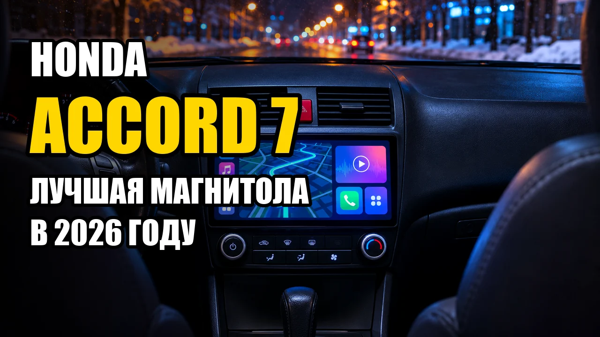
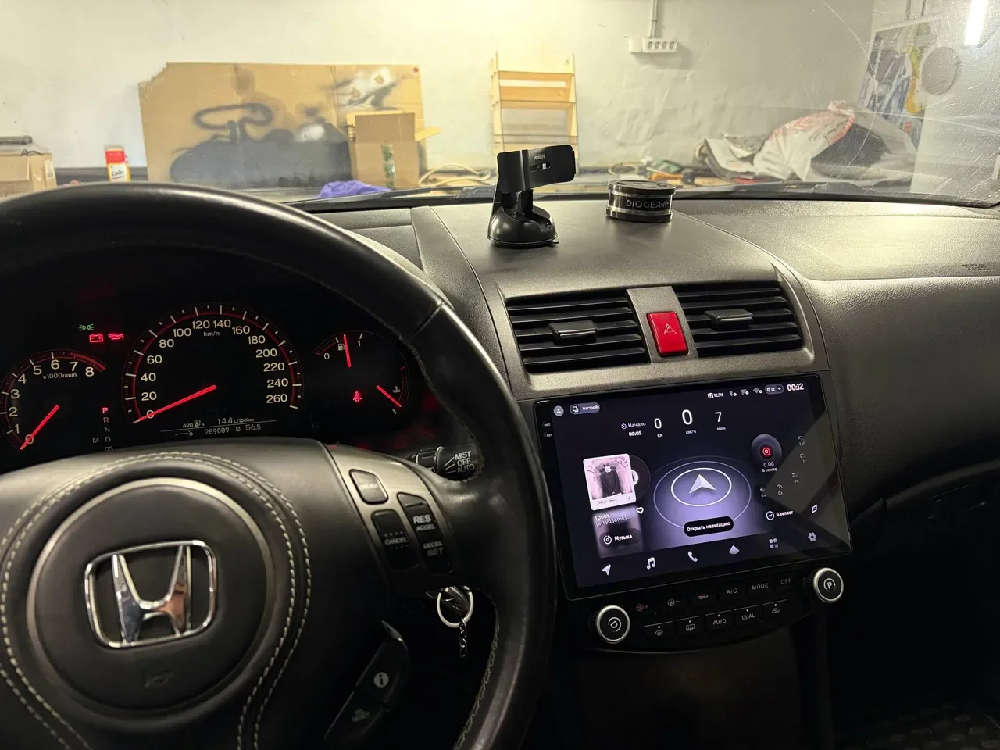
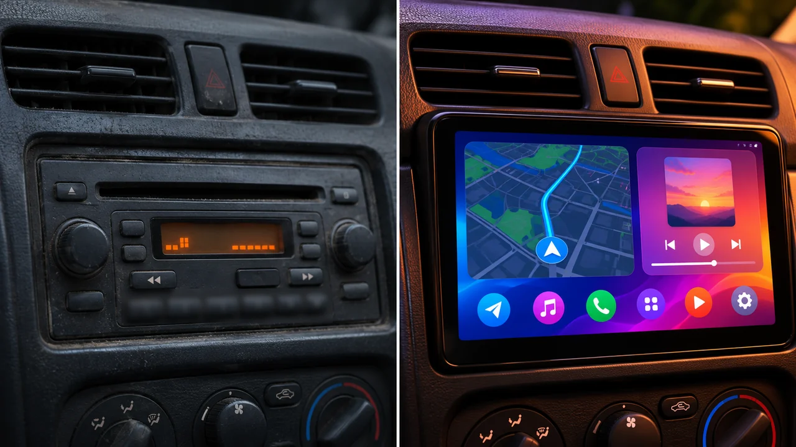
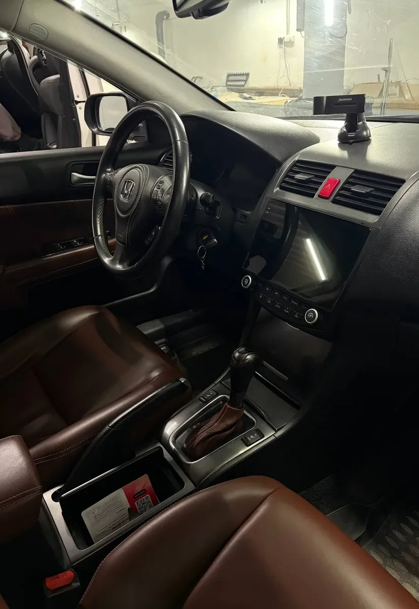
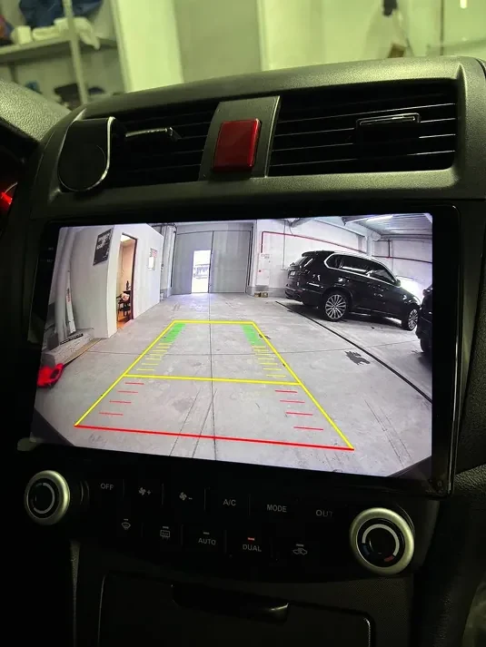

Лучшая магнитола для Honda Accord 7: что ставить вместо штатной в 2026 году

Honda Accord 7 до сих пор едет так, что продавать жалко, а штатная магнитола в нём осталась в нулевых.
Телефон на присоске, провод зарядки через весь салон, навигатор в ладони на светофоре. А если машина из Японии, то и радио ловит не всё: японские приёмники тех лет рассчитаны на свой диапазон FM, а наш эфир идёт выше.

Коротко: что ставить на Accord 7
Лучшее, что можно сделать с мультимедиа Accord 7 сегодня, – Android-магнитола в штатную рамку. Экран встаёт на место старой магнитолы под дефлекторы, климат остаётся на своих кнопках, кнопки на руле продолжают работать.
В каталоге TEYES Sibir под Accord 7 2002–2008 стоит Teyes CC3L за 30 400 ₽ – цена на сайте 17.11.2026, при оплате наличными, установка отдельно, от 3 500 ₽. Мы ставили на Accord 7 и старшую CC4 – она на фото выше.
Русифицировать японский блок можно не всегда, и даже удачный перевод меню не добавит ни Яндекс Навигатора, ни наших станций. Ниже – почему.
Какой у вас Accord 7: Япония, Европа или Euro R
Седьмой Accord для Японии и Европы выпускали с октября 2002 по ноябрь 2008 года. В 2006 модельном году машину обновили: новые фары и бамперы.
- Седан CL7 – мотор 2.0, CL8 – 2.0 с полным приводом, CL9 – 2.4.
- Универсал – CM1, CM2, CM3.
- Дизель 2.2 (CN1, CN2) продавали только в Европе.
- Euro R – только для Японии: 2.0 на 220 л. с. при 8 000 об/мин, шестиступенчатая механика, кресла Recaro.
В США под именем Accord продавали другую, более крупную машину, а этот Accord там назывался Acura TSX. Поэтому рамка от американского Accord на ваш не встанет.
Что стояло в машине с завода
Японские машины. Кнопки мультимедиа на руле были во всех комплектациях. За доплату ставили навигацию Honda InterNavi на DVD с сенсорным экраном 7 дюймов и аудиосистему с CD-чейнджером на 6 дисков и 8 динамиками. После обновления 2006 года InterNavi перешла с DVD на жёсткий диск.
Европейские машины. В базе – 6 динамиков, в версиях Executive – 8. Навигация InterNavi на DVD шла штатно только на 2.4 Executive. CD-чейнджер на 8 дисков и громкую связь по Bluetooth продавали как дополнительное оборудование.
Ни в одной комплектации нет CarPlay, Android Auto и интернета в машине.
Что раздражает владельцев в 2026 году
Японское радио. Диапазон FM в Японии до 2011 года был 76–90 МГц, наш – 87,5–108 МГц. Магнитола японского Accord рассчитана на свой эфир. Импортёры ставят на такие машины конвертер диапазона, но частота на экране после него не совпадает с настоящей.
Японская навигация. InterNavi ведёт по картам Японии и говорит по-японски. Для Новосибирска это просто экран с меню, которое не прочитать.
Европейская навигация. Карты на DVD – ровно того года, когда записан диск, а CD-чейнджер в 2026 году нужен разве что ради коллекции дисков.
Телефон вместо навигатора. Отсюда присоска на стекле, провод через салон и звонки через динамик телефона.
Парковка задом. На двух наших работах по Accord камеру заднего вида ставили новую – с линиями, которые поворачивают вслед за рулём.
Три пути и какой выбрать
Русифицировать штатный блок. Если перевод для вашей магнитолы есть, меню станет русским. Карты останутся японскими, приложений не прибавится, приёмник продолжит ловить свой диапазон.
Оставить как есть и ездить с телефоном. Бесплатно, но присоска и провод остаются с вами.
Поставить Android-магнитолу Teyes в штатную рамку. Новый экран вместо старого блока, наши карты и станции, интернет по SIM-карте, CarPlay и Android Auto. Этот путь закрывает все пункты из списка выше.

Какую Teyes ставить на Accord 7
Teyes CC3L – то, что есть в каталоге TEYES Sibir под Accord 7: память 4/32 ГБ, экран IPS 1280×720, 8 ядер, слот под SIM-карту с 4G, Wi-Fi, процессор звука DSP, CarPlay и Android Auto, GPS и ГЛОНАСС, вход камеры AHD 1080p. Цена – 30 400 ₽ на 17.11.2026.
Teyes CC4 и старше. У Teyes под Accord 7 есть рамки для CC4L, CC4 и CC4 Pro, в том числе с экранами 11 и 13 дюймов. На сайте эти комплекты под Accord 7 без цены – считаем по фото панели. CC4 мы ставили на Accord 7 2007 года.
Какая рамка подойдёт, видно по фото центральной панели: рынок и комплектация меняют проём.
Что останется от штатного
- Кнопки на руле. Подключаются к новой магнитоле, на нашей работе с CC3 2K они сохранились.
- Климат. Работает со своих кнопок под экраном, как раньше.
- Камера. Новая камера заднего вида показывает на экране линии, которые изгибаются вслед за поворотом руля.
- Отделка салона. Экран встаёт в штатное место, панель не пилят.

Наши работы по Accord
Accord 7 2007 года, Teyes CC4. Экран встал на место штатной магнитолы, аварийка и дефлекторы над ним на своих местах, климат под экраном – на фото выше.
Honda Accord, Teyes CC3 2K и новая камера. Работа заняла один день, кнопки руля сохранились, линии парковки на экране поворачивают вслед за рулём. Смотреть работу на сайте

Accord 8, Teyes LUX ONE 12 дюймов. Это уже следующее поколение: большой экран в редкой рамке сверху панели, на экран выведены кнопки руля, открытые двери и климат. Смотреть работу на сайте
Все варианты для Accord – русификация, замена магнитолы, что сохранится по рынкам – собраны на одной странице: магнитола и русификация Honda Accord. Комплект CC3L под Accord 7 с ценой – в каталоге.
TEYES Sibir, официальный установочный центр Teyes в Новосибирске: Сухарная 35 корпус 13, пн–пт с 11:00 до 19:00.